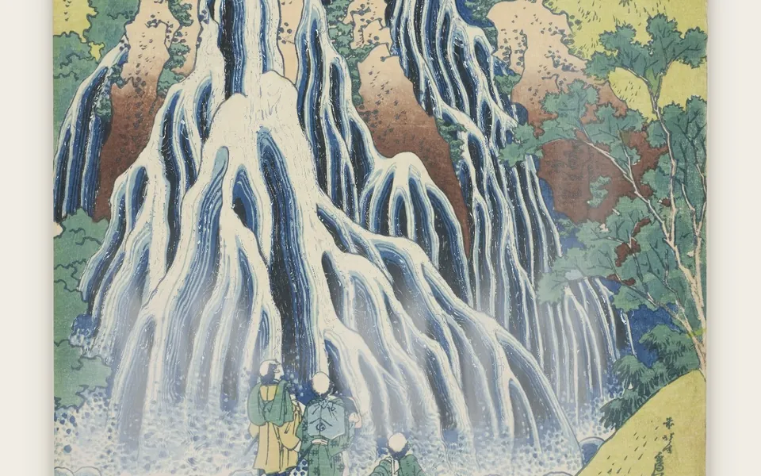
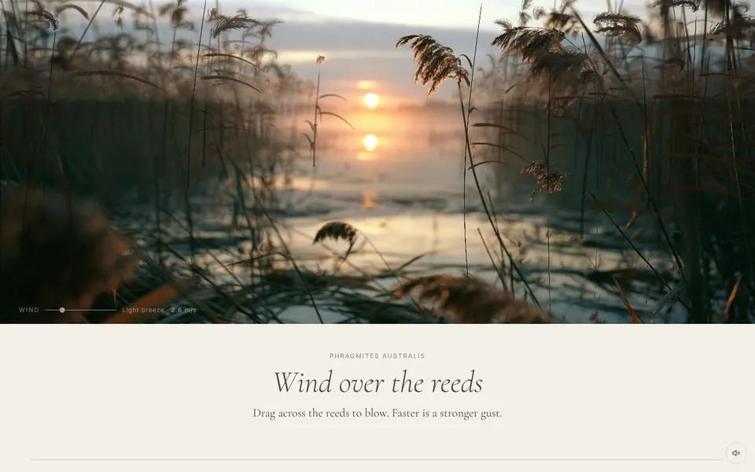
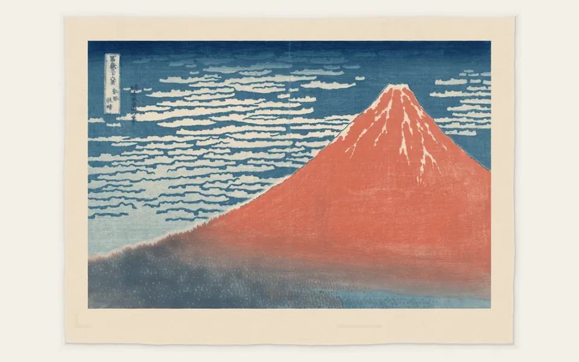
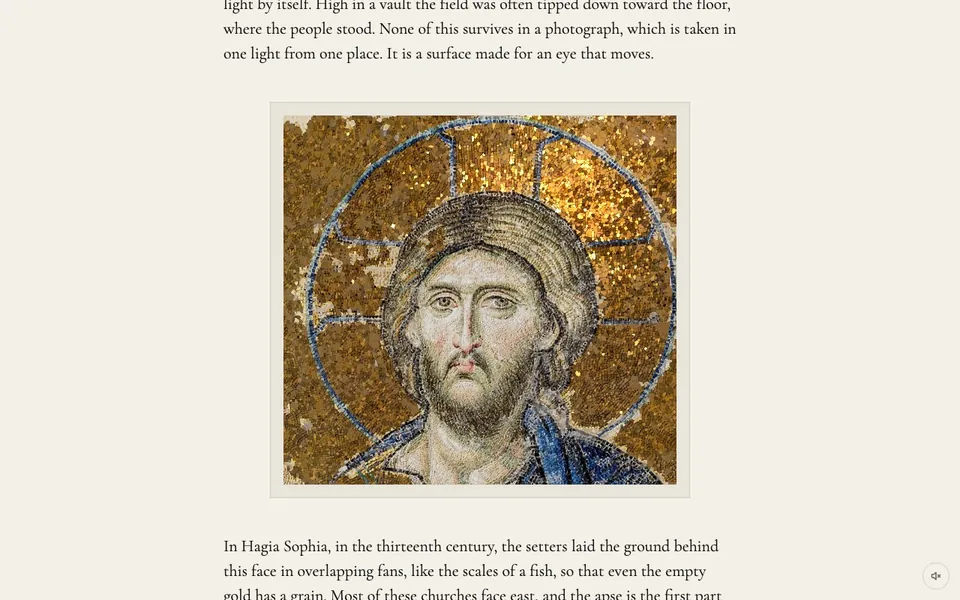
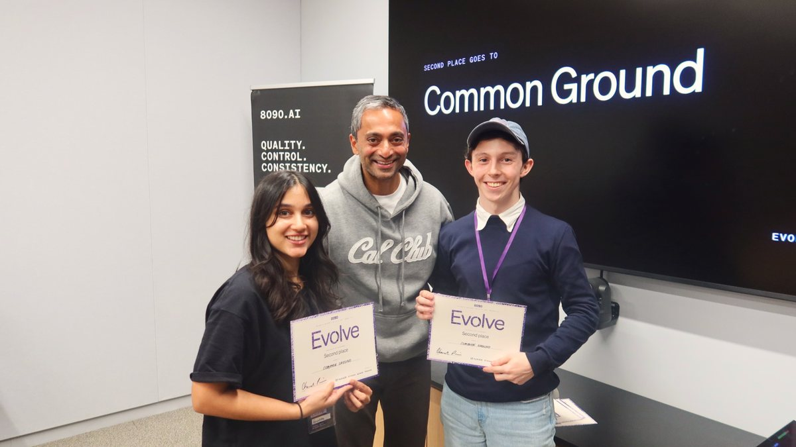
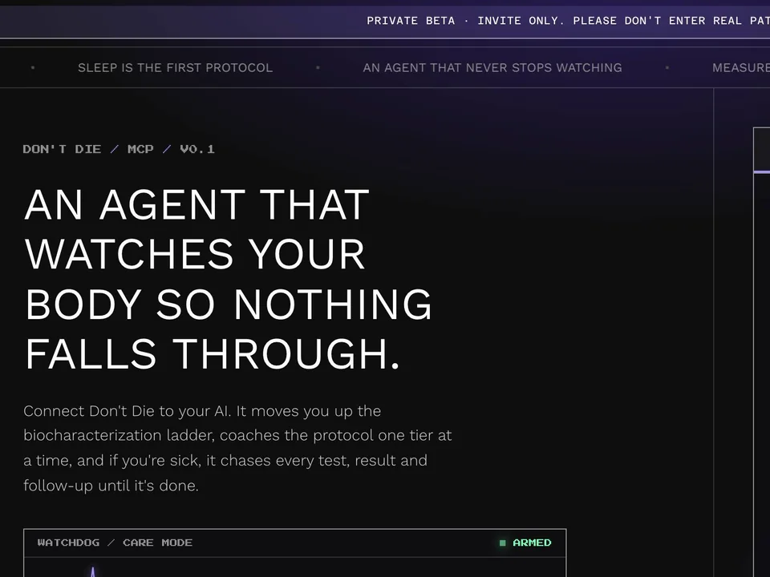
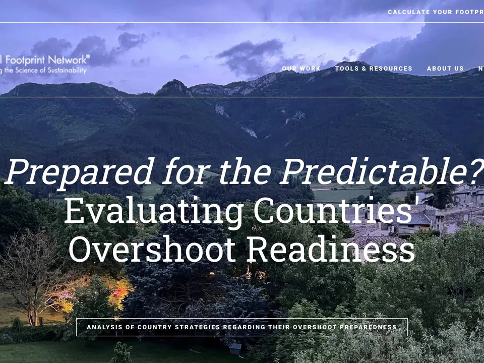

Evolve

Second placeEvolve, 8090, November 2026


Systems

MCP servers2025–Dozens built
The largest runs QuickBooks Enterprise across 85+ company files for a 36-building property portfolio.

NFBA 2027 pilot2026Global Footprint Network
A pipeline that loaded and checked ~31M rows of FAOSTAT data for the national footprint accounts.
Studio
Motion capture2026Frontier Tower AI floor
The capture rig and a humanoid training-data pipeline (FreeMoCap, MuJoCo).
Hand dataOngoingML datasets
Synchronous ASL hand-motion video for training.